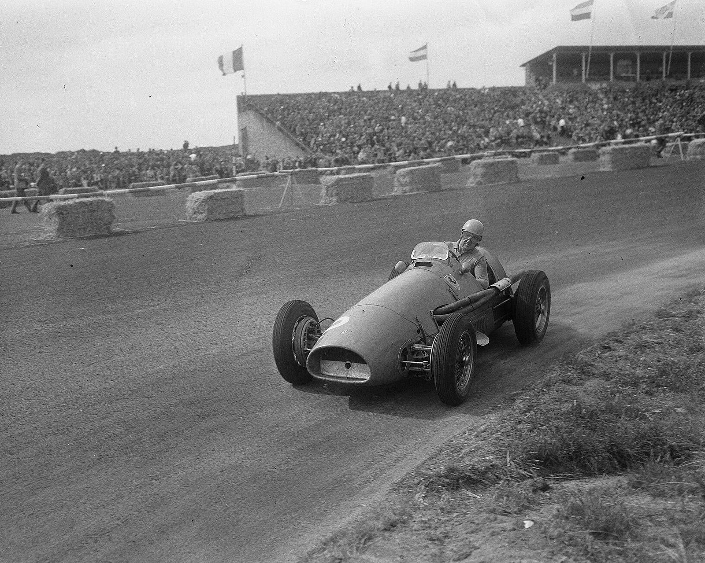

01 / 1950 – 1959
The Birth of the Legend
Ferrari enters the very first Formula One World Championship and never leaves. Alberto Ascari strings together victory after victory, and the Scuderia's scarlet becomes the colour every rival learns to fear.
CAR
500 F2
DRIVER
Alberto Ascari
